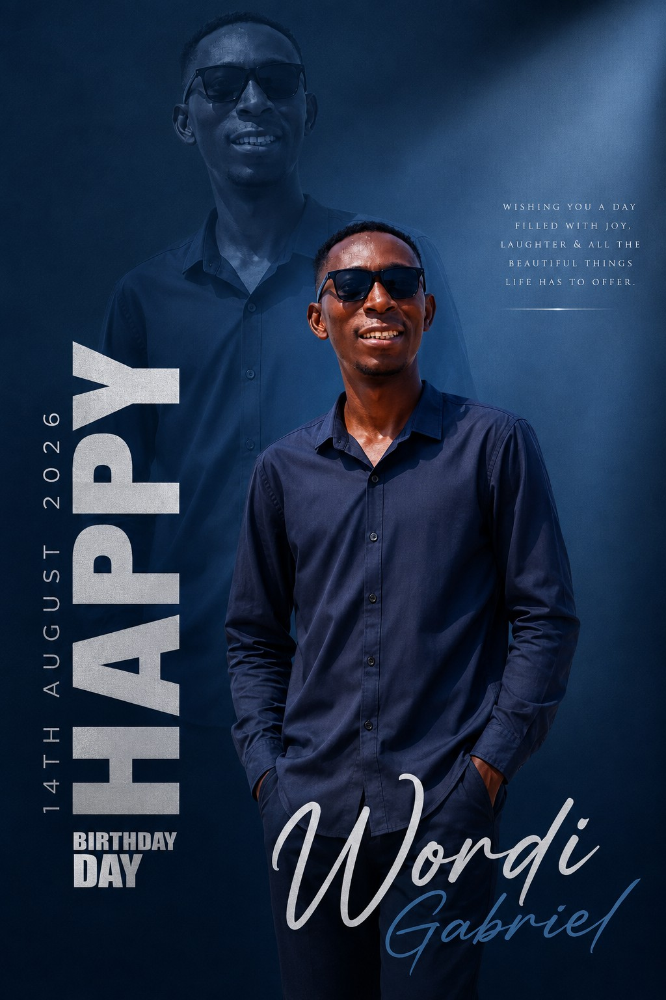
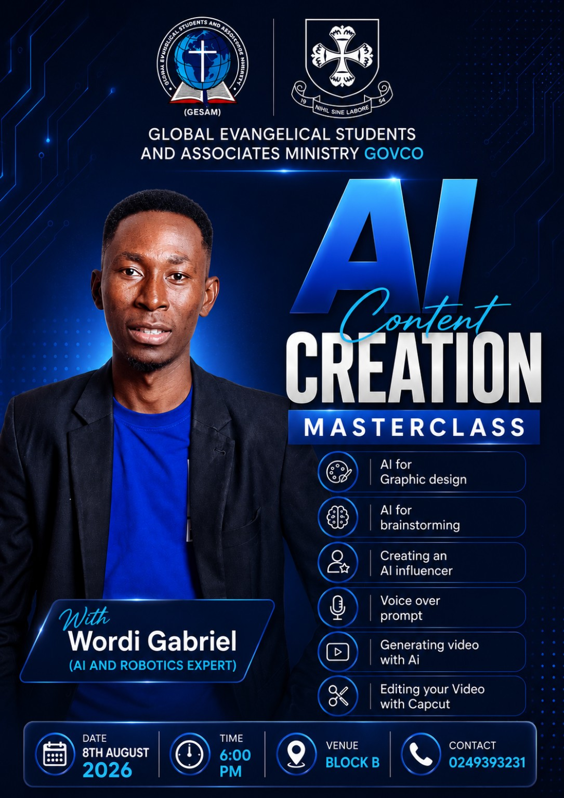
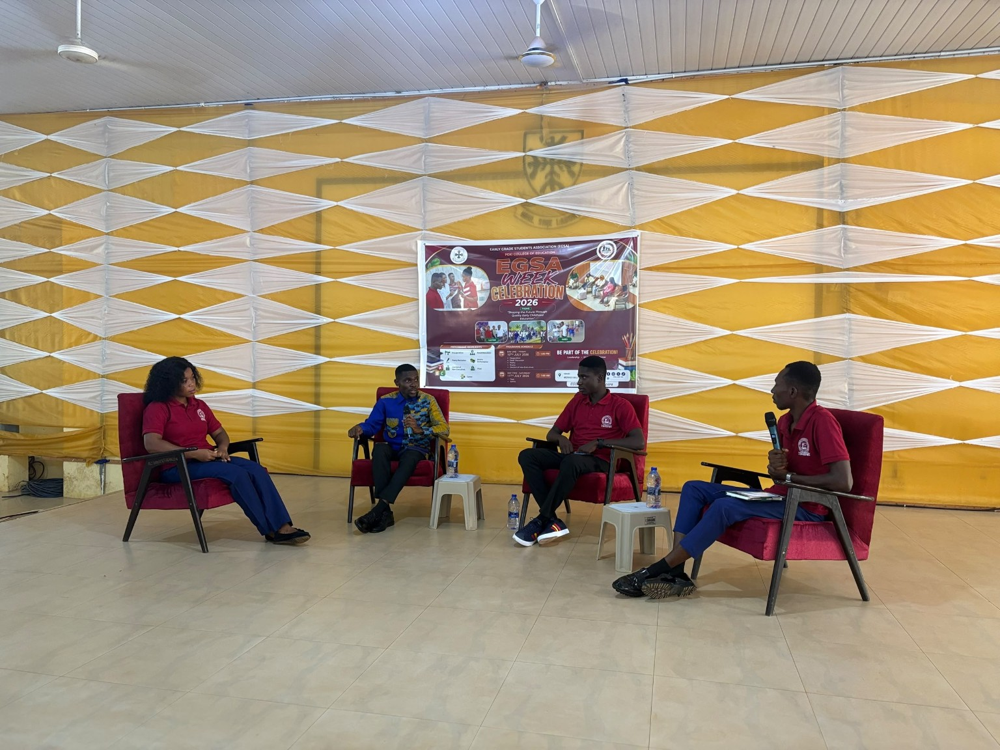

My Story
Today, I turn 28.
And honestly, I don't know whether to smile, cry, or just sit quietly and think about how far I've come.
Because when people see a birthday, they see another year. But I see 28 years of a life that nobody completely knows.
They see the smiles.
They see the things I'm trying to build.
They see the confidence. But they don't see every battle that happened behind those smiles.
They don't see the nights I questioned myself, the moments I wondered if I was really good enough, or the times I felt like I was falling behind while everyone else seemed to be moving forward.
They don't see how many times I've had to encourage myself when I desperately needed someone else to encourage me.
“Your life does not have to make sense to everyone. It only has to keep moving forward.”

The Years I Had To Wait
My journey did not move as quickly as I wanted it to.
I applied so many times for admission into tertiary education. Application after application, hope after hope, I kept believing that the next opportunity would finally be the one.
But there were disappointments. There were moments when the answer was no, and moments when there was simply no answer at all.
For about four to five years, I had to stay home while life seemed to be moving forward for everyone else.
Those years came with financial crisis, uncertainty, disappointment and questions I could not easily answer.
Sometimes I wondered whether my dreams were still possible. Sometimes I wondered whether I had been forgotten.
But those years were not empty. They were shaping me in ways I could not yet understand.
“A delay can feel like a dead end when you are standing inside it, but sometimes it is only a chapter being written slowly.”
I learned patience. I learned resilience. I learned that my timeline was not the same as everybody else's.
And eventually, the door I had prayed for began to open.
The Tears Nobody Saw
There were lots of tears that nobody saw.
There were midnight prayers when the world was quiet and I had nothing left to say except, “Lord, please make a way.”
There were sacrifices I could not explain to people. There were nights when I had to hold myself together because I knew I had another morning to face.
There were also moments of sickness that nearly took my life.
In those moments, I was reminded that life itself is a gift. I could have lost everything, but somehow I was still here.
“When I had no strength left, grace carried what I could not carry.”
Through it all, the Lord of Hosts was there.
El-Roi — the God who sees me — saw me. He saw the tears. He saw the prayers. He saw the sacrifices. He saw the battles that nobody else knew about.
And He brought me through.
It is still not smooth. I still have questions. I still have mountains ahead of me. But I trust His direction.
But I know Who holds tomorrow.
Learning Myself
And maybe that's why this birthday feels different.
Because I'm beginning to understand myself.
I'm beginning to understand that life doesn't always happen according to the plans we make when we're young.
Sometimes you dream about one thing, and life takes you somewhere completely different. Sometimes you work hard and still don't get the result you expected.
Sometimes you give your heart to people and end up hurt. Sometimes you make mistakes. Sometimes you disappoint yourself.
“Am I really becoming the person I wanted to be?”
I've asked myself that question more times than I can count. And I don't always have the answer.
But I'm learning to be okay with that.
Because maybe life isn't about having all the answers. Maybe life is about continuing to search, continuing to learn, and continuing to become.
“Sometimes the strongest thing you can do is begin again.”
I Kept Going
I've made mistakes in my life. I've made choices I wish I could go back and change.
I've trusted people who disappointed me. I've had relationships that taught me painful lessons.
I've experienced moments where my heart was heavy but I still had to wake up the next morning and continue living.
I've had days when I felt like giving up on certain dreams.
I kept going.
I don't even know where I found the strength sometimes.
Maybe it was hope. Maybe it was faith. Maybe it was the belief that somewhere ahead of me was a version of my life worth fighting for.
And so I kept learning. I kept trying. I kept dreaming.
“The chapter that hurt you is not the chapter that defines you.”
Then Technology Found Me
Education became part of my journey. Then technology came into my life.
Things that once looked complicated slowly became things I wanted to understand.
I didn't start as an expert. I still don't consider myself one.
I started as someone who was curious. Someone who was willing to ask questions. Someone who was willing to fail. Someone who was willing to try again.
“I may not always know how to get there, but I refuse to stop looking for a way.”
I've built things that worked. I've built things that didn't. I've written code that refused to cooperate.
I've had ideas that looked perfect in my head and completely different in reality. 😂
I've started things without knowing exactly where they would lead. But every experience has added another piece to who I am.


I Want My Life To Mean Something
And somewhere along the way, I discovered something bigger than technology.
I discovered that I want to impact people.
I want to teach. I want to inspire children. I want young people to look at technology and believe,
“I can do this too.”
I want to create things that matter.
I want to build something that will outlive me.
I want my life to be more than just existing.
But I'm not going to pretend that I've figured everything out. I haven't.
There are still things I'm praying for. There are dreams I'm still chasing. There are doors I'm still waiting to open.
“I am not chasing perfection. I am becoming someone I can be proud of.”
Growing Up
There are days when I'm confident. And there are days when I don't feel confident at all.
But maybe that's what growing up really is.
To The Younger Me
Dear younger Gabriel,
I'm sorry for all the times I thought you weren't enough.
I'm sorry for comparing you to other people.
I'm sorry for believing that your journey had to look like someone else's.
I'm sorry for being so hard on you when you were simply trying to figure life out.
You were doing the best you could with what you knew.
And look at you now. You're still here. You're still dreaming. You're still learning. You're still fighting. You're still becoming.
I Am Not Late
So, Gabriel...
At 28, you don't have everything. You haven't achieved everything. You aren't where you thought you would be.
And that's okay.
You are not late.
You are not finished.
You are not a failure.
You are still becoming.
And one day, I hope you look back at this version of yourself and say,
Because I believe there is a version of you somewhere in the future who is living the life you're currently praying for.
A version of you who built the things you're only imagining today. A version of you who walked into rooms you once thought you weren't qualified to enter.
A version of you who became the teacher, creator, entrepreneur, innovator, and man you always hoped you could become.
Today, I Celebrate
So today, I don't celebrate perfection.
I celebrate every small victory that nobody else noticed.
I celebrate the people who believed in me.
I celebrate the people who left and taught me something.
I celebrate the failures that made me stronger.
I celebrate the dreams that refused to die.
I celebrate the fact that I'm still here.
“I survived seasons I thought would break me, and I am still becoming.”